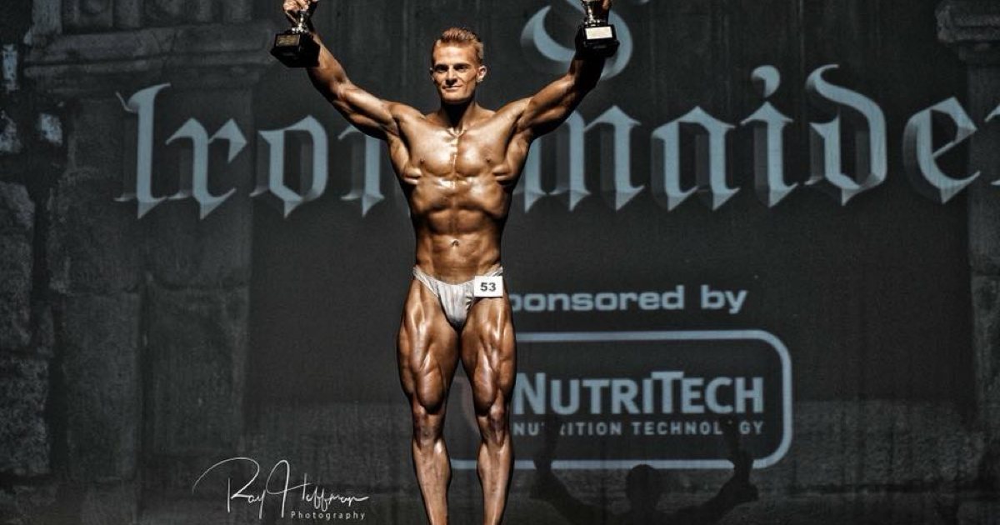
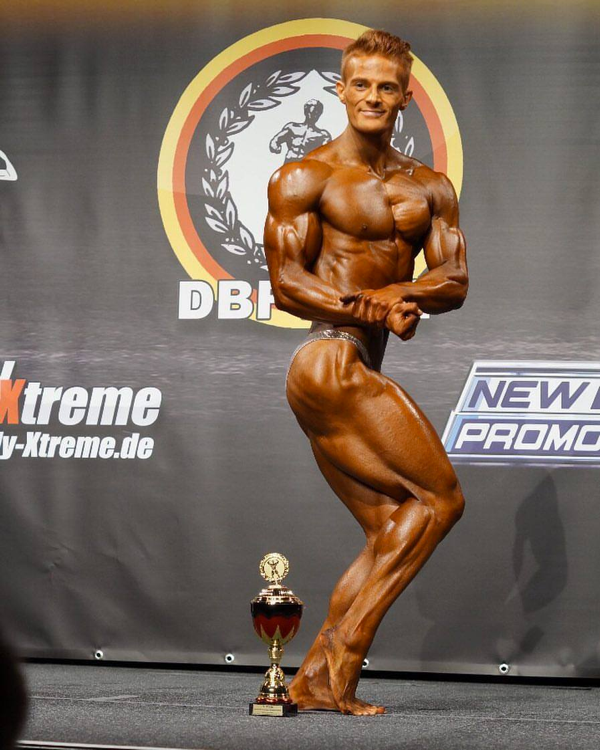
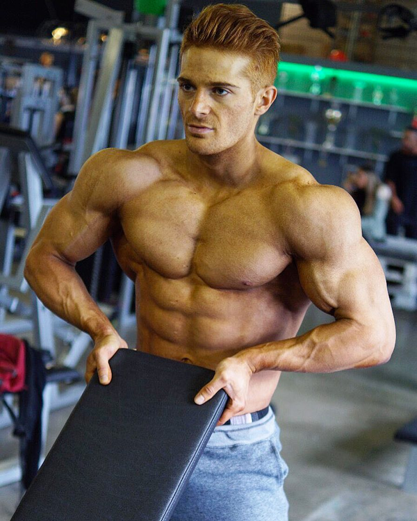

Interview mit Classic Bodybuilding Athlet Noah Risch
Steckbrief
- Alter: 23 Jahre
- Gewicht: Aktuell 86kg - 88kg
- Gewicht (Wettkampf): 74,5 - 77,5
- Größe:173cm
- Größter sportlicher Erfolg: Internationaler Deutscher Junioren Meister Classic Bodybuilding
Wie lange bist du mittlerweile am Eisen?
Also ich habe mit 16 Jahren zu Hause mit einer Hantelbank und zwei Kurzhanteln in meinem Zimmer angefangen zu trainieren. Ich habe aber gleichzeitig noch erfolgreich Fußball gespielt und bin zwischenzeitlich auch noch viel Rennrad gefahren. Ich bin also schon immer Sportler gewesen. Mit 19 Jahren habe ich mich dann endgültig fürs Bodybuilding entschieden. Dementsprechend kann man sagen, dass ich jetzt 4 Jahre "richtiges" Bodybuilding betreibe.
Wie sind deine Kraftwerke in den drei Grundübungen Bankdrücken, Kniebeugen und Kreuzheben?
Zu Kraftwerten kann ich nicht viel sagen, da ich bislang noch nie Maximalversuche gemacht habe. Ich trainiere quasi nie unter 8 Wiederholungen. Zudem mache ich kein Kreuzheben und auch selten Bankdrücken.
Welche Muskelgruppe trainierst du am liebsten und warum?
Ich trainiere eigentlich alles gerne. Mein Lieblingsmuskel ist die Schulter. Ich finde eine große runde Schulter sieht einfach geil aus. Wie glaube ich jeder trainiere ich auch gerne Brust, da ich finde dass sich der Brustpump am besten anfühlt. Dann noch Beine natürlich, es ist oft eine Hassliebe wo die Schmerzen am größten sind und man sich richtig quälen kann. Beine sind auch meine stärkste Muskelgruppe gefolgt von den Schultern.
Wie bist du zum Bodybuilding gekommen?
Mein Onkel hat mich mit 16 mal mittrainieren lassen und ich denke jeder junge Kerl findet Muskeln cool. Zudem war ich immer sehr dünn. Ich habe mit 55 Kilo Körpergewicht angefangen damals. Ich habe angefangen und bislang noch nicht aufgehört 😉
Was sind deine sportlichen Ziele für das kommende Jahr?
Ich habe seit 2014 jedes Jahr Wettkämpfe gemacht und 2018 ist voraussichtlich ein Jahr Offseason angesagt. Das wird meinem Körper guttun und ich erhoffe mir in diesem Jahr nochmal etwas an Qualität hinzuzugewinnen und mich nochmal zu verbessern, um dann 2019 richtig anzugreifen.
Hast du eine Morgenroutine und wenn ja, wie sieht diese aus?
Also wenn ich Uni habe stehe ich so nach dem dritten Wecker auf😅, gehe runter in die Küche und mache mir Frühstück. Danach gehe ich duschen, wasche meine Zähne, zieh mich an, packe mein Essen für den Tag ein und fahre los zur Uni.
Wenn du heute nochmal von vorne anfangen müsstest, würdest du alles nochmal gleich machen oder gäbe es Dinge die Du anders angehst?
Eigentlich finde ich, dass ich von Anfang an schon vieles richtig gemacht habe. Ich war von Anfang an wissbegierig, habe mich in Portalen eingelesen und Youtube Videos geschaut. Natürlich war es nicht ideal gleichzeitig noch Fußball zu spielen. Da habe ich natürlich sehr viel Kalorien verbraucht. Vielleicht hätte ich in den Anfangsjahren mehr rausholen können, wenn ich nicht gleichzeitig Ausdauersport gemacht hätte und nicht zu Hause nur mit zwei Kurzhanteln trainiert hätte. Ich habe erst mit 18 in einem kleinen Kraftraum angefangen. Aber wenn ich jetzt zurückblicke, bin ich doch ziemlich zufrieden mit meiner Entwicklung.
Welchen Tipp gibst du Neueinsteigern, die gerade mit dem Training beginnen?
Der wichtigste Tipp ist meiner Meinung nach Geduld. Viele unterschätzen wie aufwendig der Sport ist und wie viel Disziplin der Sport erfordert. Jeder erwartet Resultate über Nacht. Bodybuilding ist ein Marathon und kein Sprint. Zudem müsst ihr den Sport lieben um Fortschritte zu machen. Einen schönen Körper haben zu wollen ohne Aufwand zu betreiben wird leider nicht funktionieren. Hingabe und Leidenschaft sind ein Muss.
Wie sieht ein typischer Tag bei Dir aus?
Das hängt immer davon ab ob ich gerade Uni habe oder nicht. Wenn ich Uni habe, dann gehe ich nach der Uni trainieren und esse eben meine Mahlzeiten zwischendurch. Am Abend bereite ich dann die Mahlzeiten für den nächsten Tag vor. Wenn ich keine Uni habe schlafe ich gerne aus und halte mittags sehr gerne einen Mittagsschlaf. Dann bereite ich meine Mahlzeiten auch fast immer frisch zu. Ich trainiere meistens Nachmittags gegen 17 - 18 Uhr.
Welche Trainingsphilosophie verfolgst du und warum?
Ich trainiere mit viel Volumen. Ich bin keiner der sehr schwere Gewichte benutzt, sondern mehr Übungen und Sätze macht. Dabei ist die Trainingsintensität sehr hoch und ich versuche immer 100 Prozent zu geben. Mein Trainingsprinzip ist progessiver Overload. Sprich wenn ich beispielsweise bei einer Übung 4 Sätze à 10 oder 12 Wiederholungen schaffe, darf ich bei der nächsten Trainingseinheit das Gewicht steigern und fahre nach dem gleichen Prinzip fort. Nach einigen Monaten wechsle ich auch mal Übungen aus um neue Reize zu setzen und einfach um mehr Abwechslung zu haben. In dieser Offseason probiere ich bei mal aus ein bisschen schwerer zu trainieren und beispielsweise bei verschiedenen Übungen nur 3 Sätze à 8 Wiederholungen zu machen. Ich bin der Meinung, dass man immer mal neue Methoden ausprobieren sollte.
Wie sieht deine Ernährung aus und wie unterschiedlich sind bei Dir On und Off Season?
In der Offseason bevorzuge ich unter der Woche auf saubere Lebensmittel zurückzugreifen wie Hähnchen, Rinderhack, Lachs, weißen Fisch, Pute, Quark, Reis, Haferflocken, Mais, Kartoffeln, Süßkartoffeln, gesunde Fette wie Erdnussbutter, Mandeln, Olivenöl, Kokosöl, Avocado, Gemüse und etwas Obst. Ich tracke meine Kalorien und setze mir meine Lebensmittel nach Lust und Laune zusammen. Wenn ich Uni habe kann es dann mal vorkommen, dass ich für eine Woche vorkoche und dann jeden Tag das gleiche esse, weil es am einfachsten und zeitsparensten ist. Seitdem ich den Sport betreibe, ist das Wochenende frei was Ernährungsplan angeht. Diese Zeit wird genutzt um mit Freunden, bei meiner Großmutter oder mit der Familie zu essen. Ich schaue bloß dass mein Protein gedeckt ist. Am Wochenende esse ich dann gerne Pizza, Eis und Gebäck wie Cookies oder Donuts. In der Wettkampfdiät sieht es natürlich anders aus. Da wird jeden Tag strikt nach Plan gegessen und da muss ich dann schon leiden. Ich bin jemand der die letzten Wochen auf knapp über 1000 Kalorien runtergehen muss um in Wettkampfform zu kommen. Da gibt es dann meistens am Tag ein Kilo Hähnchen, Rind oder Fisch mit viel Gemüse und bißchen Kohlenhydrate je nachdem wie die Form ist.
Was sind deine Top Supplements und was hälst du von Trainings-Boostern?
Supplements die ich als wichtig einstufe sind: Magnesium, Zink, Omega 3, Vitamin D, Vitamin C. Das wären so meine Top 5. Die meisten denken nur an direkten Muskelaufbau, aber ein kranker Körper der nicht mit essentiellen Nährstoffen, Mineralien und Spurenelementen versorgt ist baut schlechter Muskeln auf. Regeneration und Gesundheit sind das A und O. Ich bin kein Fan von Trainingsboostern. Ich nehme schon seit einiger Zeit keine mehr. Manchmal ist es in Ordnung für den Spaßeffekt. Aber einige nehmen täglich einen Booster und können nicht mehr ohne trainieren. Zudem kann ich dann Abends nicht mehr schlafen wenn das Koffein hoch dosiert ist. Meinen Preworkoutshake stelle ich mir immer selber zusammen. Da habe ich dank meines Sponsors Sportnahrung Engel genug Auswahl.
Hast du einen Buchtipp für unsere Leser?
Bücher über Bodybuilding habe ich noch nicht so viele gelesen. Ich informiere mich lieber über Videos oder in Foren. Da ist natürlich immer viel Halbwissen dabei aber mittlerweile habe ich auch schon genug Erfahrung und Wissen, dass ich sinnvolle Informationen von Nutzlosen unterscheiden kann.
Fasse Bodybuilding und das was es für dich bedeutet in einem Satz zusammen.
Was Bodybuilding für mich bedeutet ist sehr schwer in Worten auszudrücken. Es ist mehr ein Gefühl was ich von Bodybuilding bekomme. Ein Gefühl was mich glücklich macht und erfüllt. Ich liebe einfach den Bodybuilding-Lifestyle. Im Bodybuilding bekommt man genau das zurück was man investiert. Nur du bist für Erfolg oder Misserfolg verantwortlich. Bodybuilding verzeiht keine Fehler. Bodybuilding besteht daraus immer hungrig zu sein und sich zu verbessern. Ich bin nie zufrieden und sehr selbstkritisch. Ich denke das sind genau die Eigenschaften die mich dahin gebracht haben wo ich jetzt bin. Demut finde ich zudem sehr wichtig. Wenn man glaubt man wäre jemand und denkt sich auf seinem Erfolg ausruhen zu müssen, wird man scheitern und niemals seine Ziele erreichen.
Danke Noah!
Danke Noah für dieses tolle Interview und die Zeit die Du Dir dafür genommen hast! 3x10.de wünscht Dir viel Erfolg beim Erreichen deiner weiteren Ziele.
Folgt Noah auf Social Media
Wenn Ihr mehr über Noah erfahren wollt, dann findet ihr ihn hier unter folgenden Links:
28.12.2017 · Interview · Classic Bodybuilding · Noah RischWie fandet Ihr das Interview? Schreibt es in die Kommentare oder auf unserer Facebookseite